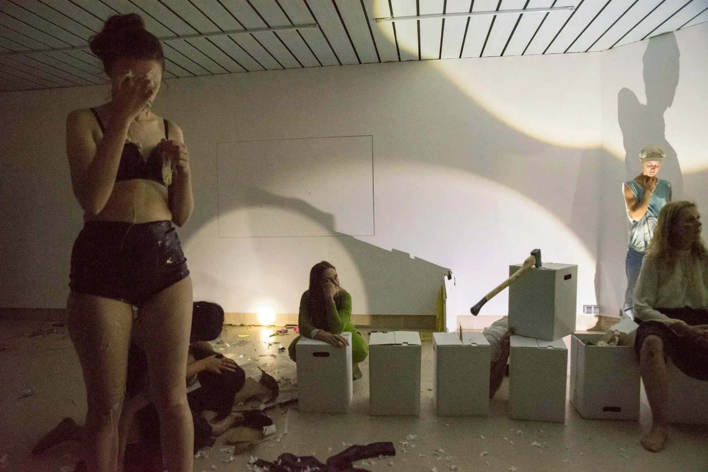
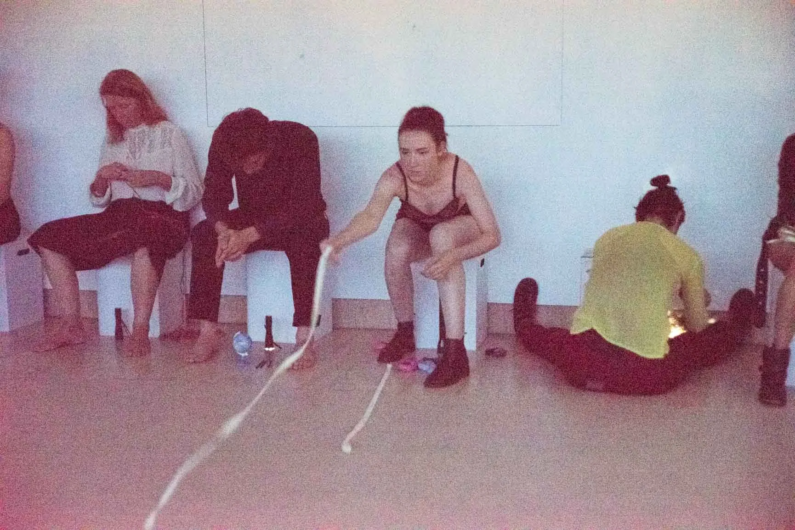
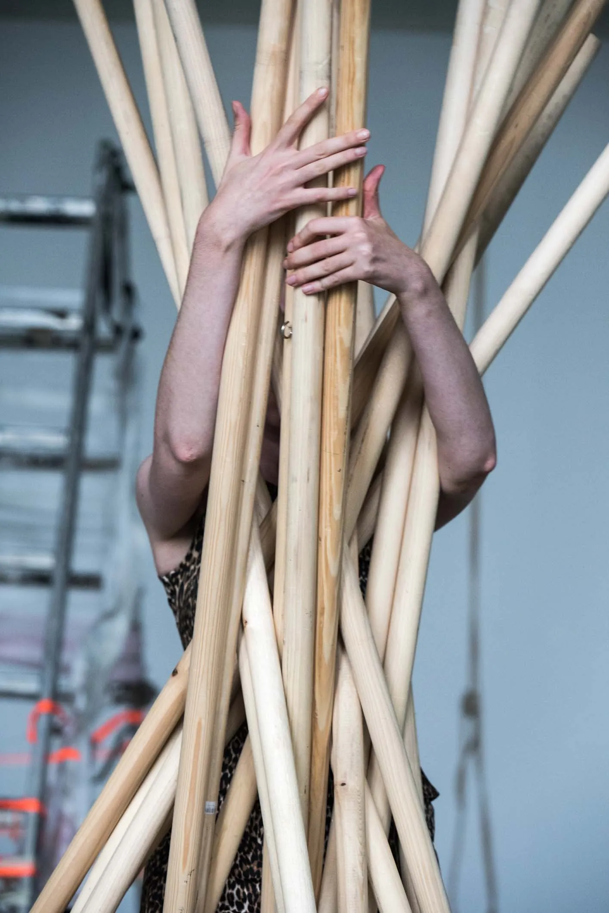
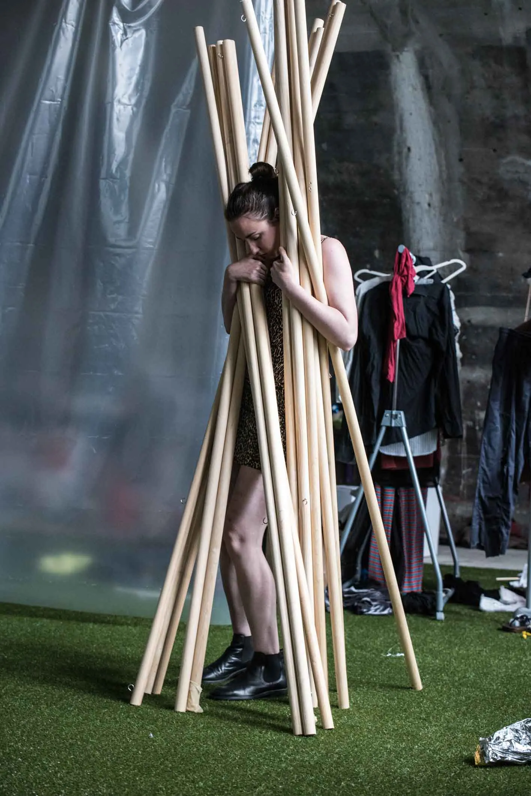

2019 / Frankfurt am Main
EXPLORING DON QUIXOTE
A durational group performance and laboratory led by Jürgen Fritz. The participants worked with exhaustion, absurdity, repetition and impossible tasks as ways of testing the limits of imagination and physical endurance.



